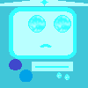
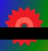
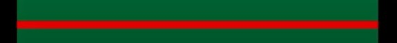

What obstacles do you have to avoid during the game?
There are not many obstacles in the game right now, but they can really give you a good challenge! These traps are:

There are not many obstacles in the game right now, but they can really give you a good challenge! These traps are:
Pretty straightforward to be honest, you hit them and you die...

Starting off, of course there is the saw which stays where it is, even if it might seem like it is gonna break off any second...
These saws rotate around a specific block! Make sure to jump over them carefully or you might get killed!
These saws move, either horizontally or vertically, and will move back and forth continously! Be careful... they can be fast and even if you dodge them for the time being, they can come back and still hit you!
Nearly identical to moving saws, but! They go back to their starting point just as they reach their end...

They appear very rarely, but they don't allow you to just mindlessly take shortcuts! No cheating!